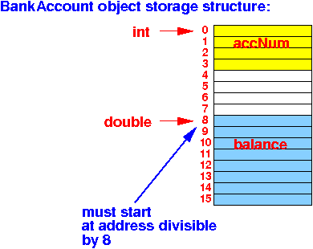

- Size of a data type
- Size of a data type = the number of bytes used to store a value of that data type.
- C has
a special operator
(sizeof) that
returns the
size of
a data type
Syntax:
sizeof( dataType ) returns the size of a variable of type "dataType" or sizeof( varName ) returns the size of the variable "varName"Comment:
- The sizeof operator
is unusual in that:
- The sizeof operator is represented by an English-like word ("sizeof")
Other operators in C are represented by symbols such as +, =, &&, ||, etc
- The sizeof operator
is unusual in that:
- Example:
int main( int argc, char* argv[] ) { printf("sizeof(char) = %lu\n", sizeof(char) ); printf("sizeof(short) = %lu\n", sizeof(short) ); printf("sizeof(int) = %lu\n", sizeof(int) ); printf("sizeof(long) = %lu\n", sizeof(long) ); printf("sizeof(long long) = %lu\n", sizeof(long long) ); printf("\n"); printf("sizeof(unsigned char) = %lu\n", sizeof(unsigned char) ); printf("sizeof(unsigned short) = %lu\n", sizeof(unsigned short) ); printf("sizeof(unsigned int) = %lu\n", sizeof(unsigned int) ); printf("sizeof(unsigned long) = %lu\n", sizeof(unsigned long) ); printf("sizeof(unsigned long long) = %lu\n", sizeof(unsigned long long) ); printf("\n"); printf("sizeof(float) = %lu\n", sizeof(float) ); printf("sizeof(double) = %lu\n", sizeof(double) ); printf("sizeof(long double) = %lu\n", sizeof(long double) ); printf("\n"); int x; printf("sizeof(x) = %lu\n", sizeof(x) ); }Output:
// gcc on Ubuntu 18 sizeof(char) = 1 sizeof(short) = 2 sizeof(int) = 4 sizeof(long) = 8 sizeof(long long) = 8 sizeof(unsigned char) = 1 sizeof(unsigned short) = 2 sizeof(unsigned int) = 4 sizeof(unsigned long) = 8 sizeof(unsigned long long) = 8 sizeof(float) = 4 sizeof(double) = 8 sizeof(long double) = 16 sizeof(x) = 4
- Example Program:
(Demo above code)

- Prog file: /home/cs255001/demo/C/set1/sizeof1.c
How to run the program:
- To compile: gcc sizeof1.c
- To run: ./a.out
- The sizeof operator
is commonly used to
find the
size of
user defined data types
(= Java's "classes")
- Later, we will
learn hot to
define
user-defined data types.
Here I will give you a preview:
#include <stdio.h> /* ---------------------------------------------- User-defined data type (like a class in Java) ---------------------------------------------- */ struct BankAccount { int accNum; // 4 bytes double balance; // 8 bytes }; int main( int argc, char* argv[] ) { struct BankAccount x; printf("sizeof(BankAccount) = %lu\n", sizeof(struct BankAccount) ); printf("sizeof(x) = %lu\n", sizeof(x) ); }Output:
sizeof(BankAccount) = 16 sizeof(x) = 16
Comment:
- A BankAccount object
requires 16 bytes to store because:
- Alignment requirement for the double typed variable balance.
Graphically explained:
 There is a gap of 4 bytes between the 2 components in the BankAccount object
- A BankAccount object
requires 16 bytes to store because:
- This program
shows that there is
a gap in
the BankAccount object:
#include <stdio.h> /* ---------------------------------------------- User-defined data type (like a class in Java) ---------------------------------------------- */ struct BankAccount { int accNum; // 4 bytes int FILLER; // Gap Filler of 4 bytes double balance; // 8 bytes }; int main( int argc, char* argv[] ) { struct BankAccount x; printf("sizeof(BankAccount) = %lu\n", sizeof(struct BankAccount) ); printf("sizeof(x) = %lu\n", sizeof(x) ); }Output:
sizeof(BankAccount) = 16 same size !!! sizeof(x) = 16
You can insert an int variable in the BankAccount object without increasing its size !!!
The FILLER variable occupied the 4 byte gap between accNum and balance.